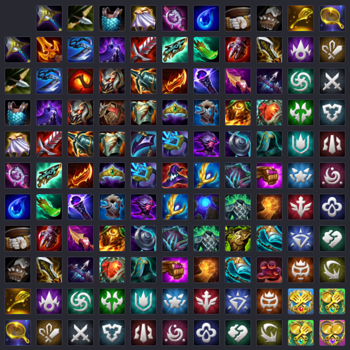

<!DOCTYPE html>
<html lang="en"></html>
<head>
    <meta charset="UTF-8">
    <meta name="viewport" content="width=device-width, initial-scale=1.0">
    <!-- js -->
    <title>Guia de TFT</title>
    <link rel="stylesheet" href="../css/style.css">
</head>
<body>
    <details>
            <summary class="drop">Bases del juego</summary>
            <p>Teamfight Tactics es un juego de estrategia en el tiempo real con un toque de manejo de recursos. En el Deberas armar un equipo mediante el reclutamiento de campeones teniendo en cuenta sus clases y origenes para que asi estos sinergicen entre si y se vuelvan mas fuertes.<br>Cada jugador inicia con 100 puntos de vida y gana el ultimo en quedar en pie, para lo cual deberas equipar a tu equipo con objetos para potenciarlos y posicionarlos de manera estrategica para vencer a tu contrincante.<br>Los combates en si se ejecutan de manera automatica, por esa razon el posicionamiento y armado de tus personajes es clave a la hora de conseguir la victoria.</p>
        </details>
    <details>
            <summary class="drop">Economia</summary>
            <p>En el juego consigues oro de manera pasiva, el cual deberas gastar para comprar campeones de la tienda que se actualiza con cada ronda que pasa. El oro recibido incrementa dependiendo de tu racha de victorias o derrotas y tambien se tiene en cuenta cuanto oro posees actualmente.<br>Cada jugador recibe 2 de oro inicial, este incrementa a 5 despues de 5 combates. Ademas de eso por cada 10 de oro que poseas recibiras 1 de oro extra, hasta un tope de 5 (50 de oro).<br>Manejar una economia estable es clave para poder conseguir los campeones que necesites para tu equipo.</p>
        </details>
    <details>
            <summary class="drop">Unidades</summary>
            <p>Cada unidad, o campeon, tiene varias caracteristicas por las cuales se diferencian, pero las mas importantes son su "clase" y "origen". Juntando varios campeones con clases y origenes en comun activa sus sinergias, las cuales dan bonificaciones para tu equipo una vez que esten en combate. Combinar y encontrar buenas composiciones entre clases y orignes es el punto central del juego.</p>
        </details>
    <details>
            <summary class="drop">Objetos</summary>
            <p>Una vez cada tantos combates vas a recibir un numero de objetos, los cuales podes combinar y equipar para potenciar a tus campeones y equipo.<br>Hay un objeto para cada estadistica, y mezclarlos da lugar a un objeto mas fuerte que da bonificaciones unicas para el personaje al que se lo des.</p>
            
        </details>


    <div id="volver-placeholder"></div>
    <button id="menu" onclick="location.href='../index.html'">Volver al Menu</button>

    <!--Sweet Alert-->
    <script src="https://cdn.jsdelivr.net/npm/sweetalert2@11"></script>
</body>
</html>